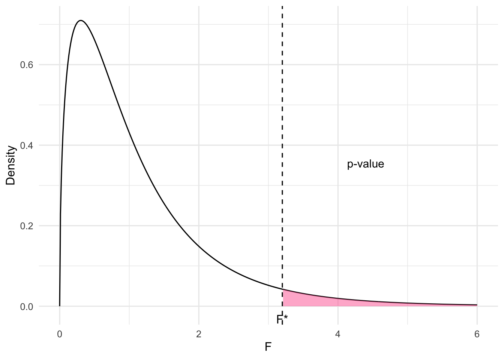
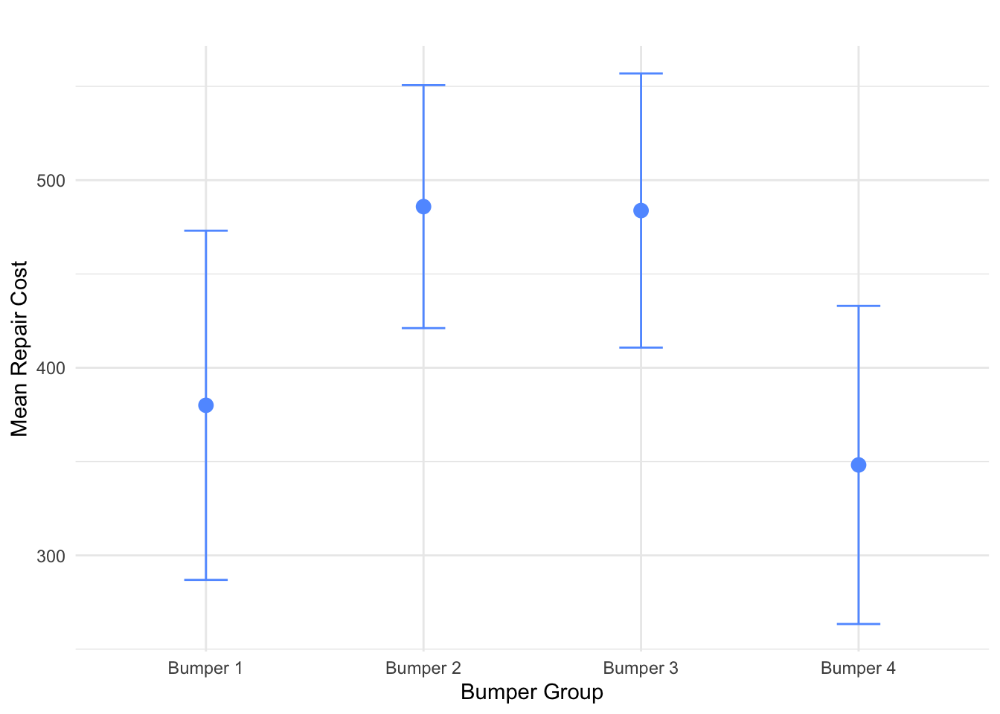
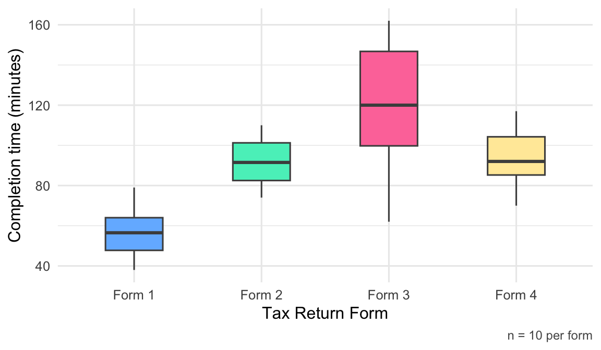
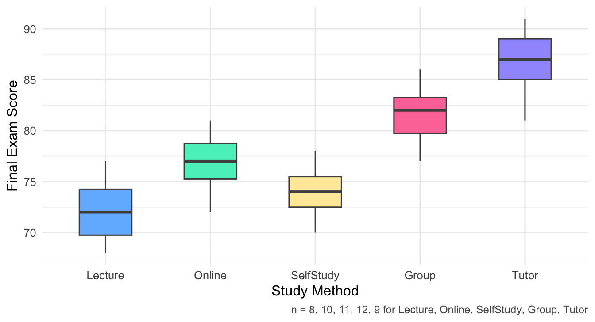

- A one-sample \(t\)-test compares one group mean to a fixed value.
- A two-sample \(t\)-test compares exactly two group means.
- ANOVA is designed to compare means across three or more independent groups.
- A chi-square test is used for categorical data (counts/proportions), not means.
Chapter 8 Analysis of Variance
ANOVA (Analysis of Variance) is used to compare multiple means.
Suppose we have \(k\) groups \((k \geqslant 3)\) and each group is given a treatment.
The ANOVA model is:
\[ Y_{ij} = \mu + \tau_i + \varepsilon_{ij}, \quad \varepsilon_{ij} \sim N(0, \sigma^2) \]
Where:
- \(Y_{ij}\): outcome on unit \(j\) in group \(i\)
- \(\mu\): overall mean
- \(\tau_i\): treatment-specific effect for group \(i\)
- \(\varepsilon_{ij}\): error term, assumed normally distributed
- \(\mu_i = \mu + \tau_i\): group mean
The equivalent form of the ANOVA model is:
\[ Y_{ij} = \mu_i + \varepsilon_{ij}, \quad \varepsilon_{ij} \sim \mathcal{N}(0, \sigma^2) \]
\[ \begin{array}{c|c|c|c|c} \text{Group 1} & \text{Group 2} & \cdots & \text{Group } K \\ \hline X_{11} & X_{21} & \cdots & X_{K1} \\ X_{12} & X_{22} & \cdots & X_{K2} \\ \vdots & \vdots & \ddots & \vdots \\ X_{1n_1} & X_{2n_2} & \cdots & X_{Kn_K} \\ \hline \bar{X}_1 & \bar{X}_2 & \cdots & \bar{X}_K \\ S_1^2 & S_2^2 & \cdots & S_K^2 \\ n_1 & n_2 & \cdots & n_K \\ \end{array} \]
Where:
- \(\bar{X}_i\): sample mean of group \(i\)
- \(S_i^2\): sample variance of group \(i\)
- \(n_i\): sample size of group \(i\)
Total Sample Size and Overall Mean
Total sample size:
\[ n = n_1 + n_2 + \cdots + n_k \]
Overall sample mean:
\[ \bar{X} = \frac{1}{n} \sum_{i=1}^k \sum_{j=1}^{n_i} X_{ij} = \frac{1}{n} \sum_{i=1}^k n_i \bar{X}_i \]
Sources of Variation
Variation within groups (SSW / SSE):
\[ \text{SSE} = \sum_{i=1}^k (n_i - 1) \cdot S_i^2 \]
This represents error or residual variation.
Variation between groups (SSB / SSTr):
\[ \text{SSTr} = \sum_{i=1}^k n_i \cdot (\bar{X}_i - \bar{X})^2 \]
This captures the treatment effect (how group means differ from overall mean).
Total Variation
\[ \text{SSTotal} = \sum_{i=1}^k \sum_{j=1}^{n_i} (X_{ij} - \bar{X})^2 \]
Decomposition Identity
\[ \text{SSTotal} = \text{SSTr} + \text{SSE} \]
ANOVA Table
| Source | df | SS | MS | F-Statistic |
|---|---|---|---|---|
| Treatment | k - 1 | SSTr | MSTr = SSTr / (k - 1) | F* = MSTr / MSE |
| Error | n - k | SSE | MSE = SSE / (n - k) | |
| Total | n - 1 | SSTotal |
Where \(MS = \dfrac{SS}{df}\)
Hypothesis Test \[ \begin{aligned} H_0\!: &\quad \mu_1 = \mu_2 = \cdots = \mu_k \\ &\quad \text{(all means are equal → all treatments equally effective)} \\ \\ H_a\!: &\quad \text{At least one } \mu_j \text{ (for } j = 1, \dots, k\text{) is different} \\ &\quad \text{(→ at least one treatment has a different effect)} \end{aligned} \]
Test Statistic
\[ F^* = \frac{\text{MSTr}}{\text{MSE}} = \frac{\text{SSTr} / (k - 1)}{\text{SSE} / (n - k)} \sim F_{(k - 1,\ n - k)} \]
Reference Distribution
The test statistic follows an \(F\)-distribution with:
- numerator degrees of freedom = \(k - 1\)
- denominator degrees of freedom = \(n - k\)
P-value

Figure 8.1: F-distribution with shaded p-value area
The Data Matrix
The following table shows last year’s sales data for a small business. The sample is put into a matrix format in which each of the three columns corresponds to one of the three countries in which the company does business. The numbers in the cell represent the sales (in units of \(\$ 1000\) ) made in that country last year. These data will be used to develop the theory underlying Analysis of Variance, or, for short, ANOVA.
| Country A | Country B | Country C | |
|---|---|---|---|
| 6 | 10 | 14 | |
| 10 | 8 | 13 | |
| 7 | 12 | 11 | |
| 9 | 10 | 10 | |
| Average | 8 | 10 | 12 |
Altogether, there were 12 sales last year that totaled $120 – so the average sale was $10.
The column (country) averages are:
Column 1 (Country A): $8
Column 2 (Country B): $10
Column 3 (Country C): $12
Now we will begin our study of how to make a statistically valid prediction of the next sales figure. In that regard, there are two possible situations that can occur:
- The country of the next sale (observation) is not known.
- The country of the next sale is known.
Situation 1.
Without any additional information, the best prediction is the sample mean \(\$ 10\). This prediction is best in the least squares sense - that is, if \(\$ 10\) had been used to predict each of the 12 observations in the sample, then the total of the squared errors \(S S_{\text {Total }}\) would be as small as possible. In our data set, \(S S_{\text {Total }}\) equals 60 . That figure can be verified by calculating \(\sum\left(x_{i}-10\right)^{2}\) for each observation \(x_{i}\) of the sample.
Situation 2. One-factor ANOVA Model.
If the country of the next sale is known, then two different predictions are possible for the next sales figure:
- The sample mean \(\$ 10\).
- The mean of the sales of the country in which the next sale will occur. (In this case, \(\$ 8\) if the next sale will occur in Country A, \(\$ 10\) in Country B, or \(\$ 12\) in Country C.) This prediction ignores the information present in the sales figures from the other two countries.
The Null Hypothesis for One-Factor ANOVA
We have discussed the prediction possibilities for one-factor ANOVA models. Now, we will learn how to test the statistical significance of a one-factor ANOVA model. Let’s suppose that we want to predict the next sales figure, and that we know the country in which this sale will occur. Without any statistical testing, we can always by default use the sample mean \(\$ 10\) to predict the next sale. The default prediction, the sample mean, doesn’t use any information about the country (column) in which the sale will occur.
However, if instead we use the mean of the observations in only one column (the column that corresponds to the particular country in which we know the next sale will occur), then we have to test the null hypothesis
\[ H_{0}: \mu_{C O L 1}, \mu_{C O L 2}, \mu_{C O L 3}, \text { are equal } \]
and reject it in favor of the alternative hypothesis
\[ H_{a}: \mu_{C O L 1}, \mu_{C O L 2}, \mu_{C O L 3}, \text { are NOT all equal } \]
If the null hypothesis is rejected, then we can be statistically confident that the column means are not all equal, and therefore that the individual column means (i. e., \(\$ 8, \$ 10, \$ 12\) ) can be used to predict the amount of the next sale. If the next sale was going to occur in Country A , then the prediction would be \(\$ 8\). If the next sale was going to occur in Country B, then the prediction would be \(\$ 10\). If the next sale was going to occur in Country C , then the prediction would be \(\$ 12\).
The One-Factor ANOVA F Test
To test the null hypothesis stated above, we have to calculate an F-statistic. If \(F_{*}>F_{(c-1, n-c), \alpha}\), then reject \(H_{0}\), and use the sample column means to predict future observations. Otherwise, do not reject \(H_{0}\) and use the overall sample mean to predict future observations.
ANOVA Table
To see how this \(F_{*}\) is calculated, see the ANOVA Table below.
| Source of Variation |
Degrees of Freedom \((\mathrm{df})\) |
Sum of Square \((\mathrm{SS})\) |
Mean Sum of Squares \((\) MSS \()\) |
F Ratio |
|---|---|---|---|---|
| Treatments | \(\mathrm{c}-1\) | SST | \(\frac{\text { SST }}{c-1}\) | \(F=\frac{\text { MST }}{\text { MSE }}\) |
| Error | \(\mathrm{n}-\mathrm{c}\) | SSE | \(\frac{\text { SSE }}{n-c}\) | |
| Total | \(\mathrm{n}-1\) | \(\mathrm{SS}_{\mathrm{Total}}\) | ||
Calculation of \(\mathrm{SS}_{\mathrm{Total}}\)
If no model is used, then the predictions for each of the 12 observations will be 10 . If these predictions are used, the squared error of these 12 predictions is given in the table below.
| Country A | Country B | Country C |
|---|---|---|
| 16 | 0 | 16 |
| 0 | 4 | 9 |
| 9 | 4 | 1 |
| 1 | 0 | 0 |
Prediction Errors Squared when NO Factor is used \((\) Total \()=60\).
Calculation of SSE
If the column model is used, then the 12 observations would have the following 12 predictions, where \(\$ 8\) is the average for the first column, \(\$ 10\) is the average for the second column, and \(\$ 12\) is the average for the third column.
| Country A | Country B | Country C |
|---|---|---|
| 8 | 10 | 12 |
| 8 | 10 | 12 |
| 8 | 10 | 12 |
| 8 | 10 | 12 |
Calculation of SSE
Using the above 12 predictions, the errors squared are shown in the table below.
| Country A | Country B | Country C |
|---|---|---|
| 4 | 0 | 4 |
| 4 | 4 | 1 |
| 1 | 4 | 1 |
| 1 | 0 | 4 |
Errors Squared when the Column Factor is used \((\) Total \()=28\).
Calculation of SST
The units explained by the column model are calculated by finding the square of each prediction change when moving from NO model to the column model. The following table presents the square of each prediction change:
| Country A | Country B | Country C |
|---|---|---|
| 4 | 0 | 4 |
| 4 | 0 | 4 |
| 4 | 0 | 4 |
| 4 | 0 | 4 |
Table of the Square of the Prediction Change when Moving from NO Model to the Column Model \((\) Total \()=32\).
ANOVA Table
The ANOVA Table for the column factor can now be filled in as shown below:
| Source of Variation |
Degrees of Freedom \((\mathrm{df})\) |
Sum of Square \((\mathrm{SS})\) |
Mean Sum of Squares \((\) MSS \()\) |
F Ratio |
|---|---|---|---|---|
| Treatments | 2 | 32 | \(\frac{32}{2}=16\) | \(\frac{16}{3.1111}=5.1428\) |
| Error | 9 | 28 | \(\frac{28}{9}=3.1111\) | |
| Total | 11 | 60 |
So for this one-factor ANOVA model, \(F_{*}=5.1428\).
Conclusion
If the null hypothesis is true, then the F-statistic should be a value from the \(F_{2,9}\) distribution. Referring to the table that contains the upper 0.05 cut-off points of F distributions, we see that \(F_{(2,9), 0.05}=4.256\). Since 5.1428 is greater than 4.256 , this tells us that the F -statistic is in the upper 0.05 of the \(F_{2,9}\) distribution. Therefore we reject the null hypothesis at the 0.05 significance level, and we conclude that the country means are not all the same. Thus, the prediction for the next sale in a known country is the mean of all the previous sales in that country.
# R Code;
salesA=c(6,10,7,9);
salesB=c (10, 8,12,10);
salesC=c(14,13,11,10);
sales=c(salesA,salesB,salesC);
country=c(rep(1,4),rep(2,4),rep(3,4));
oneway.test(sales~country,var.equal=TRUE);##
## One-way analysis of means
##
## data: sales and country
## F = 5.1429, num df = 2, denom df = 9, p-value =
## 0.0324# R Code;
# Another way: using lm;
salesA=c(6,10,7,9);
salesB=c (10, 8,12,10);
salesC=c(14,13,11,10);
sales=c(salesA,salesB,salesC);
country=c(rep(1,4),rep(2,4),rep(3,4));
anova(lm(sales~factor(country)));## Analysis of Variance Table
##
## Response: sales
## Df Sum Sq Mean Sq F value Pr(>F)
## factor(country) 2 32 16.0000 5.1429 0.0324 *
## Residuals 9 28 3.1111
## ---
## Signif. codes:
## 0 '***' 0.001 '**' 0.01 '*' 0.05 '.' 0.1 ' ' 1Officially, to use the predictions from an ANOVA model, three assumptions about the populations from which the sample was taken must be satisfied:
- Each population has a Normal distribution.
- Each population has the same standard deviation \(\sigma\).
- The observations are mutually independent of one another.
Formulas
Sum of Squares for Treatments (a.k.a. between-treatments variation or Explained)
\[ S S T=\sum_{j=1}^{k} n_{j}\left(\bar{x}_{j}-\overline{\bar{x}}\right)^{2} \]
Sum of Squares for Error (a.k.a. within-treatments variation or Unexplained)
\[ S S E=\sum_{j=1}^{k} \sum_{i=1}^{n_{j}}\left(x_{i j}-\bar{x}_{j}\right)^{2}=\left(n_{1}-1\right) s_{1}^{2}+\ldots+\left(n_{k}-1\right) s_{k}^{2} \]
Mean Square for Treatments
\[ M S T=\frac{S S T}{k-1} \]
Mean Square for Error
\[ M S E=\frac{S S E}{n-k} \]
Test Statistic
\[ F=\frac{M S T}{M S E} \]
Exercise
A statistics practitioner calculated the following statistics:
\[ \begin{array}{|c|c|c|c|} \hline \textbf{Statistic} & \textbf{1} & \textbf{2} & \textbf{3} \\ \hline n & 5 & 5 & 5 \\ \hline \bar{x} & 10 & 15 & 20 \\ \hline s^2 & 50 & 50 & 50 \\ \hline \end{array} \]
Complete the ANOVA table.
Solution
\[ \begin{aligned} & \overline{\bar{x}}=\frac{5(10)+5(15)+5(20)}{5+5+5}=15 \\ & S S T=5(10-15)^{2}+5(15-15)^{2}+5(20-15)^{2}=250 \\ & S S E=(5-1)(50)+(5-1)(50)+(5-1)(50)=600 \end{aligned} \]
ANOVA Table
| Source of Variation | Degrees of Freedom (df) | Sum of Square (SS) | Mean Sum of Squares (MSS) | F Ratio |
|---|---|---|---|---|
| Treatments | 2 | 250 | \(\frac{250}{2}=125\) | \(\frac{125}{50}=2.50\) |
| Error | 12 | 600 | \(\frac{600}{12}=50\) | |
| Total | 14 | 850 |
Exercise
A statistics practitioner calculated the following statistics:
\[ \begin{array}{|c|c|c|c|} \hline \textbf{Statistic} & \textbf{1} & \textbf{2} & \textbf{3} \\ \hline n & 4 & 4 & 4 \\ \hline \bar{x} & 20 & 22 & 25 \\ \hline s^2 & 10 & 10 & 10 \\ \hline \end{array} \]
Complete the ANOVA table.
Solution
\[ \begin{aligned} & \overline{\bar{x}}=\frac{4(20)+4(22)+4(25)}{4+4+4}=22.33 \\ & S S T=4(20-22.33)^{2}+4(22-22.33)^{2}+4(25-22.33)^{2}=50.67 \\ & S S E=(4-1)(10)+(4-1)(10)+(4-1)(10)=90 \end{aligned} \]
ANOVA Table
| Source of Variation | Degrees of Freedom (df) | Sum of Square (SS) | Mean Sum of Squares (MSS) | F Ratio |
|---|---|---|---|---|
| Treatments | 2 | 50.67 | \(\frac{50.67}{2}=25.33\) | \(\frac{25.33}{10}=2.53\) |
| Error | 9 | 90 | \(\frac{90}{9}=10\) | |
| Total | 11 | 140.67 |
Exercise
A consumer organization was concerned about the differences between the advertised sizes of containers and the actual amount of product. In a preliminary study, six packages of three different brands of margarine that are supposed to contain 500 ml were measured. The differences from 500 ml are listed here. Do these data provide sufficient evidence to conclude that differences exist between the three brands? Use \(\alpha=0.05\).
| Brand 1 | Brand 2 | Brand 3 |
|---|---|---|
| 1 | 2 | 1 |
| 3 | 2 | 2 |
| 3 | 4 | 4 |
| 0 | 3 | 2 |
| 1 | 0 | 3 |
| 0 | 4 | 4 |
Exercise on 3 bounds
Consider
\(\alpha = 0.05\)
| Brand 1 | Brand 2 | Brand 3 |
|---|---|---|
| \(x_{11}=1\) | \(x_{21}=2\) | \(x_{31}=1\) |
| \(x_{12}=3\) | \(x_{22}=2\) | \(x_{32}=2\) |
| 3 | 4 | 4 |
| 0 | 3 | 2 |
| 1 | 0 | 3 |
| \(x_{16}=0\) | \(x_{26}=4\) | \(x_{36}=4\) |
| \(n_1=6\) | \(n_2=6\) | \(n_3=6\) |
Overall Sample Size
\[ n = n_1 + n_2 + n_3 = 18 \]
Sample Means
Group 1: \[ \bar{X}_1 = \frac{1}{n_1} \sum_{j=1}^{n_1} x_{1j} = \frac{1}{6}(1 + 3 + \dots + 0) = 1.33 \]
Group 2: \[ \bar{X}_2 = \frac{1}{n_2} \sum_{j=1}^{n_2} x_{2j} = \frac{1}{6}(2 + 2 + \dots + 4) = 2.50 \]
Group 3: \[ \bar{X}_3 = \frac{1}{n_3} \sum_{j=1}^{n_3} x_{3j} = \frac{1}{6}(1 + 2 + \dots + 4) = 2.67 \]
Overall Mean
\[ \bar{X} = \frac{1}{n} \sum_{i=1}^{k} \sum_{j=1}^{n_i} x_{ij} = \frac{1 + 3 + \dots + 0 + 2 + 2 + \dots + 4 + 1 + 2 + \dots + 4}{18} \]
\[ = \frac{1}{n} \sum_{i=1}^{k} n_i \bar{X}_i = \frac{1}{18} \left[ (6)(1.33) + (6)(2.5) + (6)(2.67) \right] \]
\[ = 2.17 \]
| Brand 1 | Brand 2 | Brand 3 |
|---|---|---|
| \(x_{11} = 1\) | \(x_{21} = 2\) | \(x_{31} = 1\) |
| \(x_{12} = 3\) | \(x_{22} = 2\) | \(x_{32} = 2\) |
| 3 | 4 | 4 |
| 0 | 3 | 2 |
| 1 | 0 | 3 |
| \(x_{16} = 0\) | \(x_{26} = 4\) | \(x_{36} = 4\) |
| \(n_1 = 6\) | \(n_2 = 6\) | \(n_3 = 6\) |
| \(\bar{x}_1 = 1.33\) | \(\bar{x}_2 = 2.50\) | \(\bar{x}_3 = 2.67\) |
Sample Variances
Group 1:
\[ S_1^2 = \frac{1}{n_1 - 1} \sum_{j=1}^{n_1} (x_{1j} - \bar{x}_1)^2 \]
\[ = \frac{1}{6 - 1} \left[ (1 - 1.33)^2 + \dots + (0 - 1.33)^2 \right] \]
\[ = 1.87 \]
Group 2:
\[ S_2^2 = \dots = 2.30 \]
Group 3:
\[ S_3^2 = \dots = 1.47 \]
| Brand 1 | Brand 2 | Brand 3 |
|---|---|---|
| \(x_{11} = 1\) | \(x_{21} = 2\) | \(x_{31} = 1\) |
| \(x_{12} = 3\) | \(x_{22} = 2\) | \(x_{32} = 2\) |
| 3 | 4 | 4 |
| 0 | 3 | 2 |
| 1 | 0 | 3 |
| \(x_{16} = 0\) | \(x_{26} = 4\) | \(x_{36} = 4\) |
| \(n_1 = 6\) | \(n_2 = 6\) | \(n_3 = 6\) |
| \(\bar{x}_1 = 1.33\) | \(\bar{x}_2 = 2.50\) | \(\bar{x}_3 = 2.67\) |
| \(S_1^2 = 1.87\) | \(S_2^2 = 2.30\) | \(S_3^2 = 1.47\) |
Overall mean:
\[
\bar{x} = 2.17, \quad n = 18
\]
Within (Error)
\[ SSE = \sum_{i=1}^{3} (n_i - 1) S_i^2 = (6 - 1)(1.87) + (6 - 1)(2.30) + (6 - 1)(1.47) \]
\[ = \boxed{28.20} \]
Between (Treatment effect)
\[ SS_{\text{Tot}} = \sum_{i=1}^{3} n_i (\bar{x}_i - \bar{x})^2 = 6(1.33 - 2.17)^2 + 6(2.50 - 2.17)^2 + 6(2.67 - 2.17)^2 \]
\[ = \boxed{6.39} \]
ANOVA Table
\[ MS = \frac{SS}{df} \]
| Source of Variation | Degrees of Freedom (df) | Sum of Squares (SS) | Mean Sum of Squares (MSS) | F Ratio |
|---|---|---|---|---|
| Treatment | \(3 - 1 = 2\) | 6.39 | \(\frac{6.39}{2} = 3.195\) | \(\frac{3.195}{1.88} = 1.70\) |
| Error | \(18 - 3 = 15\) | 28.20 | \(\frac{28.20}{15} = 1.88\) | |
| Total | \(18 - 1 = 17\) | 34.59 | \(\times\) |
Hypothesis Test
\[ \begin{aligned} H_0\!: &\quad \mu_1 = \mu_2 = \mu_3 \\ &\quad \text{(all means are equal} \rightarrow \text{ all treatments equally effective)} \\ \\ H_a\!: &\quad \text{At least one } \mu_j,\ j = 1, \dots, 3\ \text{ is different} \\ &\quad \text{(} \rightarrow \text{ at least one treatment has a different effect)} \end{aligned} \]
Test Statistic
\[ F^* = \frac{MS_{\text{Tr}}}{MSE} = \frac{SS_{\text{Tr}}/(k-1)}{SSE/(n-k)} = 1.70 \sim F_{(2,15)} \]
F distribution with numerator df = 2 and denominator df = 15.
\[ \text{p-value} > 0.100 > 0.05 \quad (\alpha) \]
Conclusion of ANOVA
There is insufficient evidence to reject
\[
H_0: \mu_1 = \mu_2 = \mu_3
\]
The analysis from ANOVA suggests that all 3 groups have the same mean.
What if \(H_0\) had been rejected?
Suppose we rejected \(H_0\).
Which mean (or means) are different?
\[ \mu_1,\ \mu_2,\ \mu_3 \]
Pairwise Comparisons
We would compare the means in pairs:
- \(\mu_1\) vs. \(\mu_2\)
- \(\mu_1\) vs. \(\mu_3\)
- \(\mu_2\) vs. \(\mu_3\)
Number of comparisons:
\[
\binom{k}{2}
\]
Solution
Step 1. State Hypotheses.
\(\mu_{i}=\) population mean for differences from 500 ml (brand \(i\), where \(i=1,2,3\) ).
\(H_{0}: \mu_{1}=\mu_{2}=\mu_{3}\)
\(H_{a}\) : At least two means differ.
Step 2. Compute test statistic.
| Brand 1 | Brand 2 | Brand 3 | |
|---|---|---|---|
| Mean | 1.33 | 2.50 | 2.67 |
| Variance | 1.87 | 2.30 | 1.47 |
Grand mean = \(\bar{x} = 2.17\).
\[ SST = 6(1.33 - 2.17)^2 + 6(2.50 - 2.17)^2 + 6(2.67 - 2.17)^2 = 6.387 \approx 6.39 \]
\[ SSE = (6 - 1)(1.87) + (6 - 1)(2.30) + (6 - 1)(1.47) = 28.20 \]
ANOVA Table
| Source of Variation | Degrees of Freedom (df) | Sum of Square (SS) | Mean Sum of Squares (MSS) | F Ratio |
|---|---|---|---|---|
| Treatments | 2 | 6.39 | \(\frac{6.39}{2}=3.195\) | \(\frac{3.195}{1.88}=1.70\) |
| Error | 15 | 28.20 | \(\frac{28.20}{15}=1.88\) | |
| Total | 17 | 34.59 |
Step 3. Find Rejection Region. We reject the null hypothesis only if
\[ F>F_{\alpha, k-1, n-k} \]
If we let \(\alpha=0.05\), the rejection region for this exercise is
\[ F>F_{0.05,2,15}=3.682 \]
Step 4. Conclusion.
We found the value of the test statistic to be \(F=1.70\). Since \(F=1.70<F_{0.05,2,15}=3.682\), we can’t reject \(H_{0}\). Thus, there is not evidence to infer that the average differences differ between the three brands.
# R Code;
brand1=c(1,3,3,0,1,0);
brand2=c (2,2,4,3,0,4);
brand3=c(1,2,4,2,3,4);
differences=c(brand1,brand2,brand3);
brand=c(rep(1,6),rep(2,6),rep(3,6));
oneway.test(differences~brand,var.equal=TRUE);##
## One-way analysis of means
##
## data: differences and brand
## F = 1.6864, num df = 2, denom df = 15, p-value
## = 0.2185
##Margarine example
| Df | Sum Sq | Mean Sq | \(F\) value | |
|---|---|---|---|---|
| brand | 2 | 6.3333 | 3.1667 | 1.6864 |
| Residuals | 15 | 28.1667 | 1.8778 | 0.2185 |
Exercise
The friendly folks a the Internal Revenue Service (IRS) in the United States and Canada Revenue Agency (CRA) are always looking for ways to improve the wording and format of its tax return forms. Three new forms have been developed recently. To determine which, if any, are superior to the current form, 120 individuals were asked to participate in an experiment. Each of the three new forms and the currently used form were filled out by 30 different people. The amount of time (in minutes) taken by each person to complete the task was recorded. What conclusions can be drawn from these data?
R Code
#Step 1. Entering data;
# importing data;
# url of tax return forms;
forms_url =
"https://mcs.utm.utoronto.ca/"nosedal/data/tax-forms.txt"
forms_data= read.table(forms_url,header=TRUE);
names(forms_data);
forms_data[1:4, ];R Code
## [1] "Form1" "Form2" "Form3" "Form4"
## Form1 Form2 Form3 Form4
## 1 23 88 116 103
## 2 59 114 123 122
## 3 68 81 64 105
## 4 122 41 136 73R Code
#Step 2. ANOVA;
time1=forms_data$Form1;
time2=forms_data$Form2;
time3=forms_data$Form3;
time4=forms_data$Form4;
length(forms_data$Form1);
times=c(time1,time2,time3,time4);
forms=c(rep(1,30),rep(2,30),rep(3,30),rep(4,30));
oneway.test(times~forms,var.equal=TRUE)R Code
## [1] 30
##
## One-way analysis of means
##
## data: times and forms
## F = 2.9358, num df = 3, denom df = 116, p-value
## = 0.03632Assumptions of ANOVA
Model
\[ Y_{ij} = \mu + \tau_i + \epsilon_{ij} \quad \text{where} \quad \epsilon_{ij} \sim \mathcal{N}(0, \sigma^2) \]
or equivalently,
\[ Y_{ij} = \mu_i + \epsilon_{ij} \quad \text{with} \quad \epsilon_{ij} \sim \mathcal{N}(0, \sigma^2) \]
Observations of a group are assigned the same group mean.
Assumptions
1.Observations are independent
2.Error terms (residuals) are Normal
3.All groups have the same population variance
\[ \sigma_1^2 = \sigma_2^2 = \cdots = \sigma_k^2 = \sigma^2 \]
This common variance is estimated using the Mean Squared Error (MSE) from ANOVA:
\[ \hat{\sigma}^2 = \text{MSE} \]
Multiple Comparisons
Example
Because of foreign competition, North American automobile manufacturers have become more concerned with quality. One aspect of quality is the cost of repairing damage caused by accidents. A manufacturer is considering several new types of bumpers. To test how well they react to low-speed collisions, 10 bumpers of each of four different types were installed on mid-size cars, which were then driven into a wall at 5 miles per hour. The cost of repairing the damage in each case was assessed. The data are shown below.
Is there sufficient evidence at the \(5 \%\) significance level to infer that the bumpers differ in their reactions to low-speed collisions?
If differences exist, which bumpers differ? Apply Fisher’s LSD method with the Bonferroni adjustment.
| Bumper 1 | Bumper 2 | Bumper 3 | Bumper 4 |
|---|---|---|---|
| 610 | 404 | 599 | 272 |
| 354 | 663 | 426 | 405 |
| 234 | 521 | 429 | 197 |
| 399 | 518 | 621 | 363 |
| 278 | 499 | 426 | 297 |
| 358 | 374 | 414 | 538 |
| 379 | 562 | 332 | 181 |
| 548 | 505 | 460 | 318 |
| 196 | 375 | 494 | 412 |
| 444 | 438 | 637 | 499 |
cost_bumper1 = c(610, 354, 234, 399, 278, 358, 379, 548, 196, 444)
cost_bumper2 = c(404, 663, 521, 518, 499, 374, 562, 505, 375, 438)
cost_bumper3 = c(599, 426, 429, 621, 426, 414, 332, 460, 494, 637)
cost_bumper4 = c(272, 405, 197, 363, 297, 538, 181, 318, 412, 499)
bumper_data = rbind(
data.frame(cost = cost_bumper1, type = "Bumper 1"),
data.frame(cost = cost_bumper2, type = "Bumper 2"),
data.frame(cost = cost_bumper3, type = "Bumper 3"),
data.frame(cost = cost_bumper4, type = "Bumper 4")
)
# data in long form at
bumper_datalibrary(mosaic)
result = do.call(rbind, lapply(list(cost_bumper1, cost_bumper2,
cost_bumper3, cost_bumper4), fav_stats))
rownames(result) = paste("Bumper", 1:4)
result| min | Q1 | median | Q3 | max | mean | sd | n | missing | |
|---|---|---|---|---|---|---|---|---|---|
| Bumper 1 | 196 | 297.00 | 368.5 | 432.75 | 610 | 380.0 | 130.09313 | 10 | 0 |
| Bumper 2 | 374 | 412.50 | 502.0 | 520.25 | 663 | 485.9 | 90.53968 | 10 | 0 |
| Bumper 3 | 332 | 426.00 | 444.5 | 572.75 | 637 | 483.8 | 102.10866 | 10 | 0 |
| Bumper 4 | 181 | 278.25 | 340.5 | 410.25 | 538 | 348.2 | 118.52688 | 10 | 0 |
# Create anova model
bumper_model = aov(cost ~ type, data = bumper_data)
# Get ANOVA table
anova(bumper_model)Bumper Example
Hypotheses
Let:
- \(H_0\): \(\mu_1 = \mu_2 = \mu_3 = \mu_4\)
- \(H_a\): At least one \(\mu_i,\ i = 1, \dots, 4\) is different
Test Statistic
\(F = 4.0563 \sim F_{(3,36)}\)
\(p\)-value = 0.01395 \(<\ 0.05\) (α)
Sufficient evidence to reject \(H_0\) and conclude that at least one group of bumpers has a different mean repair cost.
Which group/groups are different?
Perform pairwise comparisons
(i.e., create pairwise confidence intervals)
For this example:
We perform the following comparisons:
- \(\mu_1 - \mu_2\)
- \(\mu_1 - \mu_3\)
- \(\mu_1 - \mu_4\)
- \(\mu_2 - \mu_3\)
- \(\mu_2 - \mu_4\)
- \(\mu_3 - \mu_4\)
We compute \(\binom{K}{2}\) comparisons, where \(K = 4\) (the number of groups):
\[ \binom{4}{2} = 6 \]
Pairwise confidence Intervals
Fisher’s LSD
\[ (\bar{x}_i - \bar{x}_j) \pm t_{(n - k,\ \alpha/2)} \cdot \sqrt{MSE \left( \frac{1}{n_1} + \frac{1}{n_2} \right)} \]
Bonferroni
\[ (\bar{x}_i - \bar{x}_j) \pm t_{(n - k,\ \alpha / (2m))} \cdot \sqrt{MSE \left( \frac{1}{n_1} + \frac{1}{n_2} \right)} \]
\(m = \binom{k}{2}\) # pairwise comparisons
Note: not conducting pairwise hypothesis tests
Fisher’s is easier to calculate, has more statistical power; however, Bonferroni maintains experiment-wise error rate.
- Fisher: \(\alpha_E = 1 - (1 - \alpha)^m\)
- Bonferroni: \(\alpha_E = 1 - \left( 1 - \frac{\alpha}{m} \right)^m\)
Fisher
- \(m = 1, \quad \alpha = 0.05 \quad \Rightarrow \quad 1 - (1 - \alpha)^1 = 0.05\)
- \(m = 2, \quad \alpha = 0.05 \quad \Rightarrow \quad 1 - (1 - \alpha)^2 \geq 0.05\)
- \(m = 3, \quad \alpha = 0.05 \quad \Rightarrow \quad 1 - (1 - \alpha)^3 \geq 1 - (1 - \alpha)^2\)
- \(\cdots\)
As \(m \uparrow\), error rate \(\uparrow\)
Bonferroni
As \(m \uparrow\),
\[
\alpha_E = \left( 1 - \frac{\alpha}{m} \right)^m
\]
remains almost constant
Solution a)
The test statistic is \(F_{*}=4.06\) and the \(P-\) value \(=0.0139\). There is enough statistical evidence to infer that there are differences between some of the bumpers. The question is now, Which bumpers differ?
Fisher’s Least Significant Difference Method
The confidence interval estimator is
\[ \left(\bar{x}_{i}-\bar{x}_{j}\right) \pm t_{\alpha / 2} \sqrt{M S E\left(\frac{1}{n_{i}}+\frac{1}{n_{j}}\right)} \]
Least Significant Difference (definition)
We define the least significant difference LSD as
\[ L S D=t_{\alpha / 2} \sqrt{M S E\left(\frac{1}{n_{i}}+\frac{1}{n_{j}}\right)} \]
A simple way of determining whether differences exist between each pair of population means is to compare the absolute value of the difference between their two sample means and LSD. In other words, we will conclude that \(\mu_{i}\) and \(\mu_{j}\) differ if
\[ \left|\bar{x}_{i}-\bar{x}_{j}\right|>L S D \]
LSD will be the same for all pairs of means if all \(k\) sample sizes are equal. If some sample sizes differ, LSD must be calculated for each combination. It can be argued that this method is flawed because it will increase the probability of committing a Type I error. That is, it is more likely that the analysis of variance to conclude that a difference exists in some of the population means when in fact none differ.
The true probability of making at least one Type I error is called the experimentwise Type I error rate, denoted \(\alpha_{E}\). The experimentwise Type I error rate can be calculated as
\[ \alpha_{E}=1-(1-\alpha)^{C} \]
Here \(C\) is the number of pairwise comparisons, which can be calculated by \(C=\frac{k(k-1)}{2}\). It can be shown that
\[ \alpha_{E} \leq C \alpha \]
which means that if we want the probability of making at least one Type I error to be no more than \(\alpha_{E}\), we simply specify \(\alpha=\frac{\alpha_{E}}{C}\). The resulting procedure is called the Bonferroni adjustment.
Solution b)
Let’s use our example to illustrate Fisher’s LSD method and the Bonferroni adjustment. The four sample means and standard deviations are \(\bar{y}_{1}=380\) and \(s_{1}=130.0931\)
\(\bar{y}_{2}=485.9\) and \(s_{2}=90.5396\)
\(\bar{y}_{3}=483.8\) and \(s_{3}=102.1086\)
\(\bar{y}_{4}=348.2\) and \(s_{4}=118.5268\)
The pairwise absolute differences are
\[ \begin{aligned} & \left|\bar{y}_{1}-\bar{y}_{2}\right|=|380-485.9|=105.9 \\ & \left|\bar{y}_{1}-\bar{y}_{3}\right|=|380-483.8|=103.8 \\ & \left|\bar{y}_{1}-\bar{y}_{4}\right|=|380-348.2|=31.8 \\ & \left|\bar{y}_{2}-\bar{y}_{3}\right|=|485.9-483.8|=2.1 \\ & \left|\bar{y}_{2}-\bar{y}_{4}\right|=|485.9-348.2|=137.7 \\ & \left|\bar{y}_{3}-\bar{y}_{4}\right|=|483.8-348.2|=135.6 \end{aligned} \]
We have that \(MSE = 12,\!399\) and \(\nu = n - k = 40 - 4 = 36\).
If we perform the LSD procedure with the Bonferroni adjustment, the number of pairwise comparisons is 6. We set \(\alpha = 0.05 / 6 = 0.0083\). Thus
\[
t_{\alpha/2,\, n-k} = t_{0.00415, 36} = 2.7935 \quad \text{(using R)}
\]
\[ LSD = t_{\alpha/2} \sqrt{ MSE \left( \frac{1}{n_i} + \frac{1}{n_j} \right) } \approx 2.7935 \cdot \sqrt{ 12399 \left( \frac{1}{10} + \frac{1}{10} \right) } = 139.109 \]
Now no pair of means differ because all the absolute values of the differences between sample means are less than 139.1095. The drawback to the LSD procedure is that we increase the probability of at least one Type I error. The Bonferroni adjustment corrects this problem.
Bumper example
library(mosaic)
result = do.call(rbind, lapply(list(cost_bumper1, cost_bumper2,
cost_bumper3, cost_bumper4), fav_stats))
rownames(result) = paste("Bumper", 1:4)
result| min | Q1 | median | Q3 | max | mean | sd | n | ||
|---|---|---|---|---|---|---|---|---|---|
| \(\rightarrow\) | Bumper 1 | 196 | 297.00 | 368.5 | 432.75 | 610 | 380.0 | 130.09 | 10 |
| \(\rightarrow\) | Bumper 2 | 374 | 412.50 | 502.0 | 520.25 | 663 | 485.9 | 90.54 | 10 |
| Bumper 3 | 332 | 426.00 | 444.5 | 572.75 | 637 | 483.8 | 102.11 | 10 | |
| Bumper 4 | 181 | 278.25 | 340.5 | 410.25 | 538 | 348.2 | 118.53 | 10 |

Figure 8.2: 95% Confidence Intervals for Mean Cost by Bumper Group
We want to calculate a 95% pairwise confidence interval for the difference between Bumper 1 and Bumper 2 using Fisher’s LSD and Bonferroni.
We test: \(\mu_1 - \mu_2\)
Fisher’s LSD Formula:
\[ (\bar{X}_1 - \bar{X}_2) \pm t_{(n - k,\ \alpha/2)} \cdot \sqrt{ MSE \left( \frac{1}{n_1} + \frac{1}{n_2} \right) } \]
Plug in:
\[ (380 - 485.9) \pm t_{(36,\ 0.025)} \cdot \sqrt{12399 \left( \frac{1}{10} + \frac{1}{10} \right)} \]
From R:
\[ = -105.9 \pm 2.028 \cdot \sqrt{12399 \cdot \left( \frac{1}{10} + \frac{1}{10} \right)} \]
\[ = -105.9 \pm 100.9942 \]
\[ = (-206.894,\ -4.9058) \]
Since the entire interval is negative, that is:
\[
\mu_1 - \mu_2 \leq 0
\]
Conclusion: Fisher’s LSD suggests \(\mu_2 > \mu_1\)
Bonferroni Formula:
\[ (\bar{X}_i - \bar{X}_j) \pm t_{(n - k,\ \alpha/(2m))} \cdot \sqrt{ MSE \left( \frac{1}{n_1} + \frac{1}{n_2} \right) } \]
Plug in:
\[ (380 - 485.9) \pm t_{(36,\ \alpha/2m)} \cdot \sqrt{12399 \left( \frac{1}{10} + \frac{1}{10} \right)} \]
Where:
\[ \alpha/2m = \frac{0.05}{2 \times 6} = 0.004167 \]
From R:
\[ = -105.9 \pm 2.79197 \cdot \sqrt{12399 \left( \frac{1}{10} + \frac{1}{10} \right)} = -105.9 \pm 139.0338 \]
\[ = (-244.9335,\ 33.13347) \]
Since the interval contains zero, that is:
\[ \mu_1 - \mu_2 \in (-244,\ 33) \]
Conclusion: Bonferroni informs us it is plausible that \(\mu_1 = \mu_2\)

Figure 8.3: Comparison of LSD and Bonferroni Confidence Intervals for \(\mu_1 - \mu_2\). LSD is narrower; Bonferroni adjusts for multiple comparisons.
Using DescTools::PostHocTest() for Fisher’s LSD
We perform Fisher’s LSD post-hoc test using the DescTools package:
This returns the following multiple comparisons of means:
95% Family-wise Confidence Level – Fisher LSD
| Comparison | diff | lwr.ci | upr.ci | p-value |
|---|---|---|---|---|
| Bumper 2 - Bumper 1 | 105.9 | 4.9053 | 206.8947 | 0.0404 |
| Bumper 3 - Bumper 1 | 103.8 | 2.8053 | 204.7947 | 0.0443 |
| Bumper 4 - Bumper 1 | -31.8 | -132.7947 | 69.1946 | 0.5271 |
| Bumper 3 - Bumper 2 | -2.1 | -103.0947 | 98.8946 | 0.9666 |
| Bumper 4 - Bumper 2 | -137.7 | -238.6947 | -36.7054 | 0.0089 |
| Bumper 4 - Bumper 3 | -135.6 | -236.5947 | -34.6053 | 0.0099 |
Signif. codes: 0 ‘’ 0.001 ‘’ 0.01 ‘’ 0.05 ‘.’ 0.1 ‘ ’ 1
Using DescTools::PostHocTest() for Bonferroni Correction
We perform a Bonferroni-adjusted post-hoc test using the DescTools package:
This returns the following multiple comparisons of means:
95% Family-wise Confidence Level – Bonferroni
| Comparison | diff | lwr.ci | upr.ci | p-value |
|---|---|---|---|---|
| Bumper 2 - Bumper 1 | 105.9 | -33.1341 | 244.9341 | 0.2423 |
| Bumper 3 - Bumper 1 | 103.8 | -35.2341 | 242.8341 | 0.2657 |
| Bumper 4 - Bumper 1 | -31.8 | -170.8341 | 107.2341 | 1.0000 |
| Bumper 3 - Bumper 2 | -2.1 | -141.1341 | 136.9341 | 1.0000 |
| Bumper 4 - Bumper 2 | -137.7 | -276.7341 | 1.3341 | 0.0535 |
| Bumper 4 - Bumper 3 | -135.6 | -274.6341 | 3.4341 | 0.0595 |
Signif. codes: 0 ‘’ 0.001 ‘’ 0.01 ‘’ 0.05 ‘.’ 0.1 ‘ ’ 1
Bonferroni vs. LSD Comparison
| Bonferroni | LSD |
|---|---|
| Controls for experiment-wise error | Does not control for experiment-wise error |
| \(\alpha_E = 1 - (1 - \frac{\alpha}{m})^m\) | \(\alpha_E = 1 - (1 - \alpha)^m\) |
| Suitable when control of Type I error is required | Suitable when control of Type I error is not a strict concern |
| Higher risk of Type II error | Lower risk of Type II error |
| Lower power | Higher power |
Example
An apple juice manufacturer has developed a new product - a liquid concentrate that, when mixed with water, produces 1 liter of apple juice. The product has several attractive features. First, it is more convenient that canned apple juice. Second, because the apple juice that is sold in cans is actually made from concentrate, the quality of the new product is at least as high as canned apple juice. Third, the cost of the new product is slightly lower than canned apple juice. The marketing manager has to decide how to market the new product. She can create advertising that emphasizes convenience, quality, or price.
To facilitate a decision, she conducts an experiment. In three different cities that are similar in size and demographic makeup, she launches the product with advertising stressing the convenience of the liquid concentrate in one city. In the second city, the advertisements emphasize the quality of the product. Advertising that highlights the relatively low cost of the liquid concentrate is used in the third city. The number of packages sold weekly is recorded for the 20 weeks following the beginning of the campaign.
These data are available at:
The marketing manager wants to know if differences in sales exist between the three advertising strategies.
To illustrate Fisher’s LSD method and the Bonferroni adjustment, consider the dataset described above and assume we tested to determine whether population means differ using a \(5 \%\) significance level. The three sample means are: \(577.55,653.0\), and 608.65 . The pair-wise absolute differences are
\[ \begin{aligned} & \left|\bar{x}_{1}-\bar{x}_{2}\right|=|577.55-653.0|=|-75.45|=75.45 \\ & \left|\bar{x}_{1}-\bar{x}_{3}\right|=|577.55-608.65|=|-31.10|=31.10 \\ & \left|\bar{x}_{2}-\bar{x}_{3}\right|=|653.0-608.65|=|44.35|=44.35 \end{aligned} \]
If we conduct the LSD procedure with \(\alpha=0.05\) we find \(\left|t_{\alpha / 2, n-k}\right|=\left|t_{0.025,57}\right|=|-2.0024655|=2.0024655\)
\[
\text{LSD} = t_{\alpha / 2} \cdot \sqrt{MSE \left( \frac{1}{n_i} + \frac{1}{n_j} \right)}
\approx 2.002 \cdot \sqrt{8894 \left( \frac{1}{20} + \frac{1}{20} \right)} = 59.71
\]
We can see that only one pair of sample means differ by more than 59.71.
That is, \(|\bar{x}_1 - \bar{x}_2| = 75.45\), and the other two differences are less than LSD.
We conclude that only \(\mu_1\) and \(\mu_2\) differ.
If we perform the LSD procedure with the Bonferroni adjustment,
the number of pairwise comparisons is 3 (calculated as \(C = \frac{k(k - 1)}{2} = \frac{3(2)}{2}\)).
We set \(\alpha = 0.05 / 3 = 0.0167\). Thus,
\[
t_{\alpha/2,\, n-k} = t_{0.0083,\, 57} = -2.4682794
\]
and
\[ t_{\alpha / 2} \sqrt{M S E\left(\frac{1}{n_{i}}+\frac{1}{n_{j}}\right)} \approx 2.467 \sqrt{8894\left(\frac{1}{20}+\frac{1}{20}\right)}=73.54 \]
Again we conclude that only \(\mu_{1}\) and \(\mu_{2}\) differ. Notice, however, in the second calculation LSD is larger. The drawback to LSD is that we increase the probability of at least one Type I error. The Bonferroni adjustment corrects this problem.
8.1 Exercises
Question 1
A professor wants to compare the average final exam scores of students taught by three different teaching methods: online, in-person, and hybrid. Each student is taught using only one method.
Which statistical method should be used?
A. One-sample \(t\)-test
B. Two-sample \(t\)-test
C. One-way ANOVA
D. Chi-square test
💡 Hint
✅ Answer
C. One-way ANOVA.
There are \(k = 3\) groups (online, in-person, hybrid) and the response variable (exam score) is continuous. When comparing means across three or more independent groups, one-way ANOVA is the appropriate method. A two-sample \(t\)-test can only handle \(k = 2\) groups.
Question 2
A researcher wants to know whether four brands of batteries have the same average lifetime. Let \(\mu_1, \mu_2, \mu_3, \mu_4\) be the population mean lifetimes (in hours) for the four brands.
Write the null and alternative hypotheses for a one-way ANOVA test.
💡 Hint
- The null hypothesis in ANOVA states that all group means are equal.
- The alternative hypothesis states that at least two means differ — not that all means differ.
- Do not write \(H_a\) as “\(\mu_1 \ne \mu_2 \ne \mu_3 \ne \mu_4\)”; that would mean all pairs differ.
✅ Answer
\[H_0: \mu_1 = \mu_2 = \mu_3 = \mu_4\] \[H_a: \text{At least two battery brands have different mean lifetimes.}\]
\(H_0\) asserts no difference among all four brands. \(H_a\) is non-specific — it only requires one pair to differ, not all pairs.
Question 3
A company compares the average repair cost for 4 bumper types. There are 10 cars in each group. The cars were randomly assigned to bumper types, and each car was tested once.
Which ANOVA assumption is mainly supported by the random assignment?
A. Normality
B. Equal variances
C. Independence
D. Large sample size
💡 Hint
- Normality: addressed by checking the distribution of residuals, not by random assignment.
- Equal variances: assessed by comparing within-group spreads, not by design.
- Independence: observations are independent when each unit is assigned to exactly one group at random, with no repeated measurements.
- Large sample size: this is not a formal ANOVA assumption.
✅ Answer
C. Independence.
Random assignment ensures that each car is independently assigned to one bumper type, with no car influencing another car’s result. This directly supports the independence assumption: \(\epsilon_{ij} \overset{iid}{\sim} N(0, \sigma^2)\). Normality and equal variances must be assessed separately (e.g., residual plots, Levene’s test).
Question 4
A study compares average weekly sales under three advertising strategies: convenience, quality, and price. There are 8 weeks of data for each strategy (\(n = 24\) total, \(k = 3\) groups).
The partial ANOVA table is:
| Source | df | SS | MS | F |
|---|---|---|---|---|
| Treatment | 240 | |||
| Error | 420 | |||
| Total |
Complete the ANOVA table.
💡 Hint
- \(df_{\text{Treatment}} = k - 1\), \(\quad df_{\text{Error}} = n - k\), \(\quad df_{\text{Total}} = n - 1\).
- \(MS = SS / df\) for each row.
- \(F = MS_{\text{Treatment}} / MS_{\text{Error}}\).
- \(SS_{\text{Total}} = SS_{\text{Treatment}} + SS_{\text{Error}}\).
✅ Answer
With \(k = 3\) groups and \(n = 24\) total observations:
\[df_{\text{Treatment}} = k - 1 = 2, \quad df_{\text{Error}} = n - k = 21, \quad df_{\text{Total}} = n - 1 = 23\]
\[SS_{\text{Total}} = 240 + 420 = 660\]
\[MS_{\text{Treatment}} = \frac{240}{2} = 120, \quad MS_{\text{Error}} = \frac{420}{21} = 20, \quad F = \frac{120}{20} = 6.00\]
| Source | df | SS | MS | F |
|---|---|---|---|---|
| Treatment | 2 | 240 | 120 | 6.00 |
| Error | 21 | 420 | 20 | |
| Total | 23 | 660 |
Question 5
Using the ANOVA table from Question 4, the critical value is \(F_{0.05,\,2,\,21} = 3.47\).
At \(\alpha = 0.05\), state the conclusion.
💡 Hint
- The rejection region for ANOVA is always in the right tail: reject \(H_0\) if \(F^* > F_{\alpha,\,df_T,\,df_E}\).
- Compare the computed \(F = 6.00\) to the critical value \(F_{0.05,2,21} = 3.47\).
✅ Answer
Since \(F^* = 6.00 > F_{0.05,\,2,\,21} = 3.47\), we reject \(H_0\).
There is sufficient evidence at \(\alpha = 0.05\) to conclude that not all advertising strategies produce the same mean weekly sales. At least two strategies differ in their average sales.
Question 6
A one-way ANOVA comparing four tax return forms gives:
\[F^* = 2.94, \quad \text{p-value} = 0.036\]
At \(\alpha = 0.05\), what should we conclude?
💡 Hint
- Compare the p-value to \(\alpha = 0.05\).
- If p-value \(< \alpha\): reject \(H_0\).
- The p-value is the probability of observing a test statistic at least as extreme as \(F^*\), assuming \(H_0\) is true.
✅ Answer
Since \(\text{p-value} = 0.036 < \alpha = 0.05\), we reject \(H_0\).
There is sufficient evidence at the 5% significance level to conclude that at least two forms have different average completion times.
Question 7
In Question 6, the ANOVA test rejects \(H_0\). Can we immediately conclude which two forms have different mean completion times?
💡 Hint
- ANOVA tests a single global null hypothesis: \(\mu_1 = \mu_2 = \cdots = \mu_k\).
- Rejecting \(H_0\) tells us that differences exist, but not where they are.
- Post-hoc methods (pairwise comparisons) are needed to identify specific pairs.
✅ Answer
No. ANOVA only tells us that at least two group means differ — it does not identify which pair(s). To determine which specific groups differ, we need pairwise comparison methods such as:
- Fisher’s LSD: higher power, but does not control the experiment-wise Type I error rate.
- Bonferroni adjustment: more conservative; controls the experiment-wise error rate by using \(\alpha' = \alpha / m\), where \(m = \binom{k}{2}\) is the number of pairwise comparisons.
Question 8
A small business records sales in three countries over four weeks each:
| Country A | Country B | Country C |
|---|---|---|
| 6 | 10 | 14 |
| 10 | 8 | 13 |
| 7 | 12 | 11 |
| 9 | 10 | 10 |
Find the mean sales for each country and the overall grand mean.
💡 Hint
- Group mean: \(\bar{x}_i = \dfrac{1}{n_i} \sum_{j=1}^{n_i} x_{ij}\).
- Grand mean: \(\bar{x} = \dfrac{\text{sum of all observations}}{\text{total number of observations}} = \dfrac{\sum_i \sum_j x_{ij}}{n}\).
✅ Answer
\[\bar{x}_A = \frac{6+10+7+9}{4} = \frac{32}{4} = 8\]
\[\bar{x}_B = \frac{10+8+12+10}{4} = \frac{40}{4} = 10\]
\[\bar{x}_C = \frac{14+13+11+10}{4} = \frac{48}{4} = 12\]
Total of all observations: \(32 + 40 + 48 = 120\). Total sample size: \(n = 12\).
\[\bar{x} = \frac{120}{12} = 10\]
Question 9
Using the sales data from Question 8:
(a) If the next observation’s country is unknown, what single value gives the best prediction of sales?
(b) If the next observation is known to be from Country C and ANOVA has already rejected \(H_0\), what value should be used as the prediction?
💡 Hint
- Without group information, the best single predictor is the grand mean \(\bar{x}\).
- Once ANOVA rejects \(H_0\) (groups differ) and the group is known, the group mean \(\bar{x}_i\) is a better predictor than \(\bar{x}\).
✅ Answer
(a) Use the grand mean \(\bar{x} = \mathbf{10}\).
Without knowing which country, the best predictor is the overall average. This is the prediction under \(H_0\) (no group differences).
(b) Use Country C’s sample mean \(\bar{x}_C = \mathbf{12}\).
When ANOVA rejects \(H_0\), the group means are significantly different. Knowing the observation comes from Country C, the group-specific mean gives a more accurate prediction than the grand mean.
Question 10
Using the group means from Question 8 (\(\bar{x}_A = 8\), \(\bar{x}_B = 10\), \(\bar{x}_C = 12\), \(\bar{x} = 10\), \(n_i = 4\) each), compute the treatment sum of squares:
\[SS_{\text{Treatment}} = \sum_{i=1}^{k} n_i\,(\bar{x}_i - \bar{x})^2\]
💡 Hint
- \(SS_{\text{Treatment}}\) measures how much the group means vary around the grand mean.
- Compute the squared deviation of each group mean from \(\bar{x}\), multiply by \(n_i\), and sum.
- A larger \(SS_{\text{Treatment}}\) means more between-group variation.
✅ Answer
Each group has \(n_i = 4\) and \(\bar{x} = 10\):
\[SS_{\text{Treatment}} = 4(8-10)^2 + 4(10-10)^2 + 4(12-10)^2\] \[= 4(4) + 4(0) + 4(4) = 16 + 0 + 16 = \mathbf{32}\]
Question 11
For the country sales example, \(SS_{\text{Treatment}} = 32\), \(SS_{\text{Error}} = 28\), \(n = 12\), \(k = 3\).
Complete the ANOVA table.
| Source | df | SS | MS | F |
|---|---|---|---|---|
| Treatment | 32 | |||
| Error | 28 | |||
| Total |
💡 Hint
- \(df_{\text{Treatment}} = k - 1 = 2\), \(df_{\text{Error}} = n - k = 9\), \(df_{\text{Total}} = n - 1 = 11\).
- \(MS_{\text{Treatment}} = 32/2\), \(MS_{\text{Error}} = 28/9\).
- \(F = MS_{\text{Treatment}} / MS_{\text{Error}}\).
✅ Answer
\[df_T = 2,\quad df_E = 9,\quad df_{\text{Total}} = 11\] \[MS_{\text{Treatment}} = \frac{32}{2} = 16,\quad MS_{\text{Error}} = \frac{28}{9} \approx 3.1111\] \[F = \frac{16}{3.1111} \approx 5.1429\]
| Source | df | SS | MS | F |
|---|---|---|---|---|
| Treatment | 2 | 32 | 16 | 5.1429 |
| Error | 9 | 28 | 3.1111 | |
| Total | 11 | 60 |
From R: oneway.test(sales ~ country, var.equal = TRUE) gives \(F = 5.1429\), p-value \(= 0.0324 < 0.05\).
We reject \(H_0\): not all countries have the same mean sales.
Question 12
A consumer organisation compares the difference between advertised and actual margarine amounts (in grams) for three brands. Six packages were sampled per brand:
| Brand 1 | Brand 2 | Brand 3 |
|---|---|---|
| 1 | 2 | 1 |
| 3 | 2 | 2 |
| 3 | 4 | 4 |
| 0 | 3 | 2 |
| 1 | 0 | 3 |
| 0 | 4 | 4 |
The ANOVA output gives \(F^* = 1.6864\), p-value \(= 0.2185\).
At \(\alpha = 0.05\), is there sufficient evidence that the brands differ in their mean shortfall?
💡 Hint
- Compare p-value = 0.2185 to \(\alpha = 0.05\).
- If p-value \(\ge \alpha\): fail to reject \(H_0\).
- A large p-value means the observed \(F\) is not unusual under \(H_0\).
✅ Answer
Since p-value \(= 0.2185 > \alpha = 0.05\), we fail to reject \(H_0\).
There is not sufficient evidence to conclude that the mean shortfall differs among the three margarine brands. The observed difference in sample means could easily be due to random variation.
Question 13
In ANOVA, a large \(F\) statistic usually means:
A. Within-group variation is much larger than between-group variation
B. Between-group variation is large relative to within-group variation
C. All observations are exactly equal
D. The sample size must be too small
💡 Hint
- Recall \(F = MS_{\text{Treatment}} / MS_{\text{Error}}\).
- \(MS_{\text{Treatment}}\) measures between-group variation.
- \(MS_{\text{Error}}\) measures within-group variation.
- A large \(F\) means the numerator (between) is much larger than the denominator (within).
✅ Answer
B. Between-group variation is large relative to within-group variation.
\[F = \frac{MS_{\text{Treatment}}}{MS_{\text{Error}}} = \frac{\text{between-group variation}}{\text{within-group variation}}\]
When group means are very different (large \(MS_{\text{Treatment}}\)) relative to the spread within each group (small \(MS_{\text{Error}}\)), \(F\) is large, providing strong evidence against \(H_0\).
Question 14
The boxplot below compares completion times (minutes) for four tax return forms. Observe the medians and spreads of the four groups.

A one-way ANOVA gives \(F^* = 2.94\), p-value \(= 0.036\). Which conclusion is best at \(\alpha = 0.05\)?
A. All four forms have exactly the same mean completion time.
B. There is evidence that at least two form means differ.
C. Form 3 must be different from every other form.
D. ANOVA cannot be used with four groups.
💡 Hint
- Compare p-value \(= 0.036\) to \(\alpha = 0.05\).
- ANOVA’s \(H_a\) states “at least two means differ” — it does not pinpoint which pair.
- Option C overclaims: ANOVA cannot identify which specific pairs differ without post-hoc tests.
- Option D is false: ANOVA is designed for \(k \ge 2\) groups.
✅ Answer
B. There is evidence that at least two form means differ.
Since p-value \(= 0.036 < \alpha = 0.05\), we reject \(H_0\). The boxplot shows Form 3 has a visibly higher median and wider spread, which is consistent with at least one group differing. However, ANOVA alone cannot confirm that Form 3 specifically differs from every other form — post-hoc pairwise comparisons (e.g., Fisher’s LSD, Bonferroni) are needed to identify which pairs differ.
Question 15
In an ANOVA \(F\)-test, the p-value is calculated as the right-tail area of the \(F\)-distribution. Explain why the right tail is used rather than the left tail or both tails.
💡 Hint
- The \(F\) statistic is \(F = MS_{\text{Treatment}} / MS_{\text{Error}}\).
- Under \(H_0\), both numerator and denominator estimate the same \(\sigma^2\), so \(F \approx 1\).
- Evidence against \(H_0\) (group means differ) makes \(MS_{\text{Treatment}}\) larger than \(MS_{\text{Error}}\), pushing \(F\) into the right tail.
✅ Answer
The \(F\) statistic measures the ratio of between-group to within-group variation:
\[F = \frac{MS_{\text{Treatment}}}{MS_{\text{Error}}}\]
Under \(H_0\) (all group means equal), both \(MS_{\text{Treatment}}\) and \(MS_{\text{Error}}\) estimate the same population variance \(\sigma^2\), so \(F\) is close to 1. When \(H_0\) is false (group means differ), \(MS_{\text{Treatment}}\) becomes inflated relative to \(MS_{\text{Error}}\), producing large values of \(F\).
Therefore, large \(F\) values constitute evidence against \(H_0\), and the rejection region lies entirely in the right tail of the \(F\)-distribution:
\[\text{p-value} = P(F_{k-1,\,n-k} \ge F^*)\]
Question 16
A study compares \(k = 5\) training programs. The ANOVA test rejects \(H_0\). How many pairwise comparisons are needed to compare all possible pairs of programs?
💡 Hint
- The number of pairwise comparisons among \(k\) groups is \(\dbinom{k}{2} = \dfrac{k(k-1)}{2}\).
- Each pair \((\mu_i, \mu_j)\) with \(i < j\) is counted once.
✅ Answer
\[m = \binom{k}{2} = \frac{k(k-1)}{2} = \frac{5 \times 4}{2} = \mathbf{10}\]
There are 10 pairwise comparisons in total: \((1,2),\ (1,3),\ (1,4),\ (1,5),\ (2,3),\ (2,4),\ (2,5),\ (3,4),\ (3,5),\ (4,5)\).
This is why the Bonferroni adjustment uses \(\alpha' = \alpha / m = 0.05 / 10 = 0.005\) per comparison — to control the experiment-wise Type I error rate.
Question 17
A researcher compares 4 bumper types. The ANOVA test rejects \(H_0\). They want to compare every pair of bumpers using pairwise confidence intervals.
Which method is more conservative: Fisher’s LSD or the Bonferroni adjustment? Briefly explain.
💡 Hint
- “More conservative” means it is harder to declare a significant difference (wider intervals, lower Type I error per comparison).
- Fisher’s LSD uses \(\alpha\) unchanged for each comparison.
- Bonferroni uses \(\alpha' = \alpha / m\) (a smaller significance level per comparison, so larger critical value \(t\)).
- A larger \(t\) critical value → wider confidence interval → harder to reject.
✅ Answer
Bonferroni is more conservative.
For \(k = 4\) groups, there are \(m = \binom{4}{2} = 6\) pairwise comparisons. Fisher’s LSD uses the full \(\alpha = 0.05\) for each comparison, while Bonferroni adjusts to \(\alpha' = 0.05 / 6 \approx 0.0083\).
The smaller \(\alpha'\) requires a larger \(t\) critical value, which produces wider confidence intervals. A larger LSD means fewer pairs will be declared significantly different. The trade-off is:
| Method | Power | Experiment-wise error control |
|---|---|---|
| Fisher’s LSD | Higher | Does not control \(\alpha_E\) |
| Bonferroni | Lower | Controls \(\alpha_E \le \alpha\) |
Fisher’s LSD increases the probability of at least one false positive (\(\alpha_E = 1 - (1-\alpha)^m\)); Bonferroni corrects this at the cost of lower power.
Question 18
For the bumper repair cost study, the pairwise absolute difference between Bumper 1 and Bumper 2 is \(|\bar{x}_1 - \bar{x}_2| = 105.9\).
Using Fisher’s LSD method with \(MSE = 12{,}399\), \(n_i = 10\), and \(t_{0.025,\,36} \approx 2.028\):
\[LSD = t_{\alpha/2} \sqrt{MSE \left(\frac{1}{n_i} + \frac{1}{n_j}\right)} \approx 2.028\sqrt{12399 \times 0.2} \approx 101.0\]
Should we conclude that \(\mu_1\) and \(\mu_2\) differ under Fisher’s LSD?
💡 Hint
- The Fisher’s LSD decision rule: conclude \(\mu_i \ne \mu_j\) if \(|\bar{x}_i - \bar{x}_j| > LSD\).
- Compare 105.9 to \(LSD \approx 101.0\).
✅ Answer
\[LSD = 2.028\sqrt{12399 \times 0.2} = 2.028 \times 49.797 \approx 101.0\]
Since \(|\bar{x}_1 - \bar{x}_2| = 105.9 > LSD \approx 101.0\), we conclude that \(\mu_1\) and \(\mu_2\) differ under Fisher’s LSD.
The 95% Fisher confidence interval for \(\mu_1 - \mu_2\) is: \[-105.9 \pm 101.0 = (-206.9,\ -4.9)\]
Since the entire interval is negative, there is evidence that \(\mu_2 > \mu_1\) (Bumper 2 has higher mean repair cost than Bumper 1).
Question 19
For the same Bumper 1 vs. Bumper 2 comparison (\(|\bar{x}_1 - \bar{x}_2| = 105.9\)), now apply the Bonferroni adjustment.
With \(k = 4\) groups, \(m = 6\) pairwise comparisons, \(\alpha' = 0.05/6 \approx 0.0083\), and \(t_{0.00415,\,36} \approx 2.792\):
\[LSD_{\text{Bonf}} = 2.792\sqrt{12399 \times 0.2} \approx 139.1\]
Should we conclude that \(\mu_1\) and \(\mu_2\) differ under the Bonferroni adjustment?
💡 Hint
- The Bonferroni decision rule is the same: conclude \(\mu_i \ne \mu_j\) if \(|\bar{x}_i - \bar{x}_j| > LSD_{\text{Bonf}}\).
- Compare 105.9 to 139.1.
- Note that \(LSD_{\text{Bonf}} > LSD_{\text{Fisher}}\), making Bonferroni harder to reject.
✅ Answer
Since \(|\bar{x}_1 - \bar{x}_2| = 105.9 < LSD_{\text{Bonf}} \approx 139.1\), we fail to conclude that \(\mu_1\) and \(\mu_2\) differ under the Bonferroni adjustment.
The Bonferroni 95% confidence interval for \(\mu_1 - \mu_2\) is: \[-105.9 \pm 139.1 = (-245.0,\ 33.2)\]
Since the interval contains zero, the difference is not statistically significant after adjustment.
This illustrates the trade-off: Fisher’s LSD (LSD \(\approx\) 101.0) declares this pair significant, while Bonferroni (LSD \(\approx\) 139.1) does not. Bonferroni is more conservative but better controls the experiment-wise error rate.
Question 20
A one-way ANOVA comparing four bumper types gives p-value \(= 0.0139\). At \(\alpha = 0.05\), write a conclusion in context.
💡 Hint
- Compare p-value = 0.0139 to \(\alpha = 0.05\).
- State whether to reject or fail to reject \(H_0\).
- Express the conclusion in the context of the problem (bumper repair costs).
✅ Answer
Since p-value \(= 0.0139 < \alpha = 0.05\), we reject \(H_0\).
There is sufficient evidence at the 5% significance level to conclude that at least two bumper types have different mean repair costs. Further pairwise comparisons (Fisher’s LSD or Bonferroni) are needed to identify which specific bumpers differ.
Use the following dataset for Questions 21–30. Three countries’ weekly sales data:
salesA <- c(6, 10, 7, 9)
salesB <- c(10, 8, 12, 10)
salesC <- c(14, 13, 11, 10)
Question 21
Combine the three group vectors into a single response variable sales. Fill in the blanks and click ▶ Run.
Exercise
💡 Hint
c(...)concatenates vectors end-to-end.- The result should have \(4 + 4 + 4 = 12\) elements in order: A values, then B values, then C values.
✅ Answer
Question 22
Create the group label variable country as a factor, with 4 repetitions of each label. Fill in the blank and click ▶ Run.
Exercise
💡 Hint
rep("C", n)repeats the string"C"\(n\) times.- Country C has 4 observations, just like A and B.
factor()converts the character vector into a categorical variable with levels.
✅ Answer
Question 23
Use tapply() to compute the mean sales for each country. Fill in the blanks and click ▶ Run.
Exercise
💡 Hint
tapply(X, INDEX, FUN)appliesFUNto subsets ofXdefined byINDEX.- Here:
X = sales,INDEX = country,FUN = mean.
✅ Answer
Question 24
Compute the overall sample mean of all 12 sales observations. Fill in the blank and click ▶ Run.
Exercise
💡 Hint
- Apply
mean()to the fullsalesvector (all 12 values combined). - This is the grand mean \(\bar{x} = \sum_{i,j} x_{ij} / n\).
✅ Answer
Question 25
Use tapply() to compute the sample variance for each country. Fill in the blank and click ▶ Run.
Exercise
💡 Hint
- Replace
meanwithvarto compute within-group sample variances. - The ANOVA equal-variance assumption requires these group variances to be similar.
✅ Answer
Question 26
Fit a one-way ANOVA model and display the ANOVA table. Fill in the blanks and click ▶ Run.
Exercise
💡 Hint
aov(response ~ group)fits the one-way ANOVA model.- The response variable goes on the left of
~; the grouping factor goes on the right. anova(model)prints the ANOVA table with df, SS, MS, F, and p-value.
✅ Answer
Question 27
Run a one-way ANOVA using oneway.test() assuming equal variances. Fill in the blank and click ▶ Run.
Exercise
💡 Hint
- Set
var.equal = TRUEto assume equal variances (classical one-way ANOVA). - Setting
var.equal = FALSEgives Welch’s ANOVA, which does not assume equal variances. - Both approaches give the same result when group variances are identical (as here).
✅ Answer
Question 28
The code below has a bug: the response and group variables are reversed. Fix the error and click ▶ Run.
Exercise
💡 Hint
- The
aov()formula is alwaysresponse ~ group. salesis the response (what we measure);countryis the group (what we compare).- Reversing them tries to predict a categorical variable from a numeric one, which is wrong for ANOVA.
✅ Answer
Question 29
Create a boxplot to compare sales across the three countries. Fill in the blanks and click ▶ Run to see the plot.
Exercise
💡 Hint
- The
boxplot()formula syntax isboxplot(response ~ group, ...). - Fill in
sales ~ countryto plot sales (y-axis) grouped by country (x-axis). - The plot should show Country C with a higher median than A and B.
✅ Answer
The boxplot shows Country C with the highest median (\(\tilde{x}_C = 12\)) and Country A with the lowest (\(\tilde{x}_A = 7.5\)). The medians increase from A to C, consistent with the ANOVA result that group means differ.
Question 30
Run the ANOVA below and read the output. Then select the correct conclusion at \(\alpha = 0.05\).
A. Do not reject \(H_0\); the country means may all be equal.
B. Reject \(H_0\); not all country means are equal.
C. Reject \(H_0\); all country means are different from each other.
D. ANOVA cannot be used here because the sample size is too small.
Exercise
💡 Hint
- Read the p-value from the output and compare it to \(\alpha = 0.05\).
- \(H_a\) in ANOVA says “at least two means differ” — not “all means are different.”
- Option C overclaims: ANOVA cannot tell which specific pairs differ.
- Option D is wrong: ANOVA works with small samples as long as the normality assumption holds approximately.
✅ Answer
B. Reject \(H_0\); not all country means are equal.
The output gives \(F = 5.1429\), p-value \(= 0.0324\).
Since p-value \(= 0.0324 < \alpha = 0.05\), we reject \(H_0\). There is sufficient evidence that at least two countries have different mean sales. Option C overclaims — ANOVA only tells us that some means differ, not that all pairs differ. Post-hoc pairwise comparisons would be needed to identify which specific pairs are different.
Question 31
A statistics instructor wants to compare the average final exam scores of students using five different study methods. The group sizes are not all equal.
| Study Method | \(n_i\) | \(\bar{x}_i\) | \(s_i^2\) |
|---|---|---|---|
| Lecture Review | 8 | 72.4 | 36.0 |
| Online Videos | 10 | 76.8 | 42.5 |
| Group Study | 12 | 81.3 | 39.2 |
| Private Tutor | 9 | 86.1 | 45.0 |
| Self Study | 11 | 74.9 | 40.8 |
Use \(\alpha = 0.05\). Round final answers to four decimal places.
(a) State the null and alternative hypotheses for a one-way ANOVA.
(b) Compute the overall (grand) sample mean. Caution: group sizes are unequal.
(c) Compute the treatment sum of squares, \(SS_{\text{Treatment}}\).
(d) Compute the error sum of squares, \(SS_{\text{Error}}\).
(e) Complete the ANOVA table.
| Source | df | SS | MS | F |
|---|---|---|---|---|
| Treatment | ||||
| Error | ||||
| Total |
(f) Suppose the p-value is 0.0003. State the conclusion in context.
(g) Does rejecting \(H_0\) tell us exactly which study methods differ? Explain.
💡 Hint
- (b) When group sizes differ, the grand mean is a weighted average: \(\bar{x} = \dfrac{\sum n_i \bar{x}_i}{\sum n_i}\), not the simple average of the \(\bar{x}_i\).
- (c) \(SS_{\text{Treatment}} = \sum_{i=1}^{k} n_i (\bar{x}_i - \bar{x})^2\).
- (d) \(SS_{\text{Error}} = \sum_{i=1}^{k} (n_i - 1) s_i^2\) — use the given sample variances.
- (e) \(df_T = k-1\), \(df_E = n-k\); \(MS = SS/df\); \(F = MS_T/MS_E\).
✅ Answer
(a) \[H_0: \mu_1 = \mu_2 = \mu_3 = \mu_4 = \mu_5\] \[H_a: \text{At least two study method means are different.}\]
(b) Total \(n = 8+10+12+9+11 = 50\). \[\bar{x} = \frac{\sum n_i \bar{x}_i}{n} = \frac{8(72.4)+10(76.8)+12(81.3)+9(86.1)+11(74.9)}{50}\] \[= \frac{579.2+768.0+975.6+774.9+823.9}{50} = \frac{3921.6}{50} = \mathbf{78.4320}\]
(c) \[SS_{\text{Treatment}} = \sum n_i(\bar{x}_i - \bar{x})^2\] \[= 8(72.4-78.432)^2 + 10(76.8-78.432)^2 + 12(81.3-78.432)^2 + 9(86.1-78.432)^2 + 11(74.9-78.432)^2\] \[= 8(36.3851) + 10(2.6634) + 12(8.2250) + 9(58.7978) + 11(12.4749)\] \[= \mathbf{1082.8288}\]
(d) \[SS_{\text{Error}} = \sum (n_i - 1)s_i^2 = 7(36.0)+9(42.5)+11(39.2)+8(45.0)+10(40.8)\] \[= 252.0+382.5+431.2+360.0+408.0 = \mathbf{1833.7000}\]
(e) \[df_T = k-1 = 4,\quad df_E = n-k = 45,\quad df_{\text{Total}} = 49\] \[MS_T = \frac{1082.8288}{4} = 270.7072,\quad MS_E = \frac{1833.7000}{45} = 40.7489,\quad F = \frac{270.7072}{40.7489} = 6.6433\]
| Source | df | SS | MS | F |
|---|---|---|---|---|
| Treatment | 4 | 1082.8288 | 270.7072 | 6.6433 |
| Error | 45 | 1833.7000 | 40.7489 | |
| Total | 49 | 2916.5288 |
(f) Since p-value \(= 0.0003 < \alpha = 0.05\), we reject \(H_0\). There is sufficient evidence that at least two study methods produce different mean final exam scores.
(g) No. ANOVA only tells us that at least two means are not equal. To determine which specific methods differ, pairwise comparisons (e.g., Fisher’s LSD or Bonferroni) are required.
Question 32
A business compares delivery times (minutes) from four courier companies. Lower times are better. The group sizes are unequal because not every company had the same number of recorded deliveries.
| Company A | Company B | Company C | Company D |
|---|---|---|---|
| 42 | 55 | 48 | 61 |
| 39 | 57 | 45 | 65 |
| 44 | 53 | 50 | 63 |
| 41 | 59 | 47 | 67 |
| 38 | 56 | 49 | 64 |
| 43 | 60 | 46 | 66 |
| 40 | 54 | 51 | 62 |
| 58 | 48 | 68 | |
| 61 | 69 | ||
| 64 |
Use \(\alpha = 0.05\).
(a) What is the response variable? What is the factor?
(b) State the null and alternative hypotheses.
(c) The ANOVA output is:
| Source | df | SS | MS | F | p-value |
|---|---|---|---|---|---|
| Company | 3 | 2739.8353 | 913.2784 | 154.8805 | < 0.0001 |
| Error | 30 | 176.9000 | 5.8967 | ||
| Total | 33 | 2916.7353 |
Make a decision and write a conclusion in context.
(d) Based on the sample means below, which company appears fastest?
| Company | \(n\) | \(\bar{x}\) |
|---|---|---|
| A | 7 | 41.0000 |
| B | 9 | 57.0000 |
| C | 8 | 48.0000 |
| D | 10 | 64.9000 |
(e) Does the ANOVA result prove that Company A is faster than every other company? Explain.
(f) List three assumptions needed for this ANOVA.
💡 Hint
- (a) The response variable is what is measured (a number); the factor defines the groups.
- (c) Compare p-value to \(\alpha = 0.05\).
- (e) Remember that ANOVA tests a global \(H_0\) — it does not identify which specific pairs differ.
- (f) The three ANOVA assumptions are independence, normality, and equal variances.
✅ Answer
(a) The response variable is delivery time (minutes). The factor is the delivery company (with \(k = 4\) levels: A, B, C, D).
(b) \[H_0: \mu_A = \mu_B = \mu_C = \mu_D\] \[H_a: \text{At least two company mean delivery times are different.}\]
(c) Since p-value \(< 0.0001 < \alpha = 0.05\), we reject \(H_0\). There is very strong evidence that not all four courier companies have the same mean delivery time.
(d) Company A appears fastest: it has the smallest sample mean time (\(\bar{x}_A = 41.0\) min).
(e) No. ANOVA only tells us that at least two means differ somewhere among the four companies. To confirm that Company A specifically differs from each of B, C, and D, pairwise comparisons (Fisher’s LSD or Bonferroni) are needed.
(f) The three ANOVA assumptions are:
- Independence: observations within and across groups are independent.
- Normality: each group’s delivery times are approximately normally distributed.
- Equal variances: the population variance is the same across all four companies (\(\sigma_A^2 = \sigma_B^2 = \sigma_C^2 = \sigma_D^2\)).
Question 33
Using the study method summary from Question 31, the ANOVA rejected \(H_0\). The instructor now wants to compare Group Study vs. Self Study specifically.
Given: \(\bar{x}_{\text{Group}} = 81.3\), \(\bar{x}_{\text{Self}} = 74.9\), \(MSE = 40.7489\), \(n_{\text{Group}} = 12\), \(n_{\text{Self}} = 11\), \(df_E = 45\).
Use \(\alpha = 0.05\).
(a) How many pairwise comparisons are possible among the five study methods?
(b) Compute Fisher’s LSD for comparing Group Study and Self Study.
\[LSD = t_{\alpha/2,\,df_E} \sqrt{MSE\!\left(\frac{1}{n_i}+\frac{1}{n_j}\right)}, \quad t_{0.025,\,45} = 2.0141\]
(c) Based on Fisher’s LSD, do the two methods differ significantly?
(d) Apply the Bonferroni adjustment. What value of \(\alpha^*\) should be used per comparison?
(e) With \(t_{\alpha^*/2,\,45} = 2.9521\), compute the Bonferroni-adjusted LSD.
(f) Based on Bonferroni, do the two methods differ significantly?
(g) Explain why Fisher’s LSD and Bonferroni can give different conclusions.
💡 Hint
- (a) Number of pairs: \(m = \dbinom{k}{2} = \dfrac{k(k-1)}{2}\).
- (b) Plug \(MSE = 40.7489\), \(n_i = 12\), \(n_j = 11\) into the LSD formula.
- (d) Bonferroni uses \(\alpha^* = \alpha / m\) per comparison.
- (f) Compare \(|\bar{x}_i - \bar{x}_j|\) to \(LSD_B\): conclude difference if \(|\bar{x}_i - \bar{x}_j| > LSD_B\).
✅ Answer
(a) \[m = \binom{5}{2} = \frac{5 \times 4}{2} = \mathbf{10} \text{ pairwise comparisons}\]
(b) \[LSD = 2.0141\sqrt{40.7489\!\left(\frac{1}{12}+\frac{1}{11}\right)} = 2.0141\sqrt{40.7489 \times 0.1742} = 2.0141 \times 2.6641 = \mathbf{5.3668}\]
(c) \(|\bar{x}_{\text{Group}} - \bar{x}_{\text{Self}}| = |81.3 - 74.9| = 6.4000\).
Since \(6.4000 > 5.3668\), Fisher’s LSD concludes the two methods differ significantly.
(d) With \(m = 10\) comparisons: \[\alpha^* = \frac{\alpha}{m} = \frac{0.05}{10} = \mathbf{0.005}\]
(e) \[LSD_B = 2.9521\sqrt{40.7489 \times 0.1742} = 2.9521 \times 2.6641 = \mathbf{7.8662}\]
(f) Since \(6.4000 < 7.8662\), Bonferroni does not find a significant difference between Group Study and Self Study.
(g) Fisher’s LSD uses the original \(\alpha = 0.05\) per comparison, giving a smaller LSD (easier to reject). Bonferroni divides \(\alpha\) by the number of comparisons (\(\alpha^* = 0.005\)), requiring a larger \(t\) critical value and wider LSD. Bonferroni is more conservative — it better controls the experiment-wise Type I error rate, but at the cost of lower power to detect individual differences.
Question 34
The boxplot below compares final exam scores for five study methods. The group sizes are not all equal.

(a) Which group appears to have the highest centre (median)?
(b) Do the spreads look roughly similar across groups?
(c) Are there any obvious outliers that may affect the ANOVA?
(d) Based on the plot alone, can we formally conclude that the population means differ? Explain.
(e) If ANOVA rejects \(H_0\), what should be done next to identify specific differences?
💡 Hint
- (a) The centre of a boxplot is the median (middle line of the box).
- (b) The ANOVA equal-variance assumption requires roughly similar heights (IQRs) across boxes.
- (c) Outliers appear as isolated points beyond the whiskers.
- (d) A boxplot is descriptive; formal inference requires a test statistic and p-value.
✅ Answer
(a) The Tutor group has the highest centre — its median is visibly above all other groups.
(b) Yes, the box heights (IQRs) appear reasonably similar across the five groups, which supports the equal-variance assumption of ANOVA.
(c) There are no extreme outliers visible in the plot — all points fall within the whiskers or close to them.
(d) No. A boxplot is a useful visual tool for checking assumptions and identifying patterns, but it cannot replace a formal hypothesis test. The conclusion must be based on the ANOVA \(F\) statistic and the associated p-value.
(e) After rejecting \(H_0\), pairwise comparisons should be performed (e.g., Fisher’s LSD or Bonferroni) to identify which specific pairs of study methods have significantly different mean scores.
Question 35
A student used R to compare mean crop yields under four fertilizer types. The output was:
Analysis of Variance Table
Response: yield
Df Sum Sq Mean Sq F value Pr(>F)
fertilizer 3 512.4 170.80 6.832 0.0012
Residuals 36 900.0 25.00Use \(\alpha = 0.05\).
(a) How many fertilizer groups were compared?
(b) What is the total sample size?
(c) State the null and alternative hypotheses.
(d) Identify the value of \(MSE\) from the output.
(e) Make a decision and write a conclusion in context.
(f) What does \(MSE\) represent in this ANOVA?
💡 Hint
- (a) \(df_{\text{Treatment}} = k - 1\); solve for \(k\).
- (b) \(df_{\text{Error}} = n - k\); use the result from (a) to find \(n\).
- (d) \(MSE\) is in the
Mean Sqcolumn of theResidualsrow. - (f) \(MSE\) estimates \(\sigma^2\), the common within-group variance.
✅ Answer
(a) \(df_{\text{Treatment}} = k - 1 = 3 \Rightarrow \mathbf{k = 4}\) fertilizer groups.
(b) \(df_{\text{Error}} = n - k = 36 \Rightarrow n = 36 + 4 = \mathbf{40}\) total observations.
(c) \[H_0: \mu_1 = \mu_2 = \mu_3 = \mu_4\] \[H_a: \text{At least two fertilizer types have different mean crop yields.}\]
(d) \(MSE = \mathbf{25.00}\) (from the Mean Sq of the Residuals row).
(e) Since p-value \(= 0.0012 < \alpha = 0.05\), we reject \(H_0\). There is sufficient evidence that at least two fertilizer types produce different mean crop yields.
(f) \(MSE\) estimates the common within-group variance \(\sigma^2\). It represents the typical variability in crop yield within a fertilizer group — the unexplained variation remaining after accounting for the effect of fertilizer type. Here, \(MSE = 25.00\) means the estimated within-group standard deviation is \(\sqrt{25} = 5\) yield units.
The following three datasets are pre-loaded and ready to use in R. They can be read with read.csv("filename").
Question 36
The file ch8-study-methods.csv contains final exam scores for 50 students across five study methods. The group sizes are not all equal. Work through each part in order.
(a–b) Import the data and check group sizes. (c–d) Compute group means and create a boxplot. (e–f) Run a one-way ANOVA and interpret the p-value. (g) Run Bonferroni pairwise comparisons to identify which methods differ.
Fill in the blanks and click ▶ Run.
Exercise
💡 Hint
table(study$method)shows how many observations are in each group.- For
tapply(): the grouping variable isstudy$method. - For
boxplot(): use the formulascore ~ method. - For
aov(): the formula isscore ~ method. - For
pairwise.t.test(): usep.adjust.method = "bonferroni".
✅ Answer
study <- read.csv("ch8-study-methods.csv")
# (b)
table(study$method)
# Group Lecture Online SelfStudy Tutor
# 12 8 10 11 9
# (c)
tapply(study$score, study$method, mean)
# Group Lecture Online SelfStudy Tutor
# 81.6667 72.1250 76.9000 74.0909 86.6667
# (d) boxplot — renders in plot area
# (e)
model <- aov(score ~ method, data = study)
anova(model)
# Response: score
# Df Sum Sq Mean Sq F value Pr(>F)
# method 4 1284.83 321.21 39.134 4.129e-14 ***
# Residuals 45 369.35 8.21
# (g)
pairwise.t.test(study$score, study$method,
p.adjust.method = "bonferroni")(f) Interpretation: p-value \(= 4.13 \times 10^{-14} \ll 0.05\) → reject \(H_0\). There is overwhelming evidence that at least two study methods have different mean exam scores.
(g) Bonferroni result: The Tutor group differs significantly from all other groups (all adjusted p \(< 0.05\)). Lecture and SelfStudy do not differ from each other (\(p = 1.00\)), but both differ from Group and Tutor. Online differs from Group (\(p = 0.0033\)) and Tutor, but not from SelfStudy.
Note: The CSV data gives slightly different means from Question 31’s summary table (which used rounded \(s_i^2\) values), so the \(F\) statistic here (\(F \approx 39.13\)) is larger than Question 31’s \(F = 6.64\).
Question 37
The file ch8-delivery-times.csv contains delivery times (minutes) for four courier companies. The group sizes are unequal. Work through each part in order.
(a–b) Import the data and check group sizes. (c–d) Compute group means and variances. (e) Create a boxplot. (f–g) Run a one-way ANOVA and interpret the result. (h) Identify the fastest company from the sample means.
Fill in the blanks and click ▶ Run.
Exercise
💡 Hint
- The grouping variable is
company; the response istime. - For
tapply():tapply(delivery$time, delivery$company, mean). - For
boxplot(): formula istime ~ company. - For
aov(): formula istime ~ company. - The company with the smallest mean time is the fastest.
✅ Answer
delivery <- read.csv("ch8-delivery-times.csv")
# (b)
table(delivery$company)
# CompanyA CompanyB CompanyC CompanyD
# 7 9 8 10
# (c)
tapply(delivery$time, delivery$company, mean)
# CompanyA CompanyB CompanyC CompanyD
# 41.0 57.0 48.0 64.9
# (d)
tapply(delivery$time, delivery$company, var)
# CompanyA CompanyB CompanyC CompanyD
# 4.667 7.750 4.571 7.211
# (f)
delivery_model <- aov(time ~ company, data = delivery)
anova(delivery_model)
# Response: time
# Df Sum Sq Mean Sq F value Pr(>F)
# company 3 2739.84 913.28 154.88 < 2.2e-16 ***
# Residuals 30 176.90 5.90(g) p-value \(< 2.2 \times 10^{-16} \ll 0.05\) → reject \(H_0\). There is overwhelming evidence that at least two companies have different mean delivery times.
(h) Company A is fastest: \(\bar{x}_A = 41.0\) min, the smallest mean.
The ANOVA output matches Question 32’s given table exactly (\(F = 154.88\), \(MSE = 5.90\)).
Question 38
The file ch8-fertilizer-yield.csv contains crop yields from four fertilizer types. The group sizes are not all equal. Work through each part in order.
(a–b) Import the data and check group sizes. (c) Create side-by-side boxplots. (d–e) Run the ANOVA and Bonferroni pairwise comparisons. (f) Explain why Bonferroni is more conservative than Fisher’s LSD.
Fill in the blanks and click ▶ Run.
Exercise
💡 Hint
- The grouping variable is
fertilizer; the response isyield. - For
boxplot(): formula isyield ~ fertilizer. - For
aov(): formula isyield ~ fertilizer. - For
pairwise.t.test(): usep.adjust.method = "bonferroni".
✅ Answer
fert <- read.csv("ch8-fertilizer-yield.csv")
# (b)
table(fert$fertilizer)
# F1 F2 F3 F4
# 8 10 12 9
# (d)
fert_model <- aov(yield ~ fertilizer, data = fert)
anova(fert_model)
# Response: yield
# Df Sum Sq Mean Sq F value Pr(>F)
# fertilizer 3 659.97 219.99 43.84 6.03e-12 ***
# Residuals 35 175.62 5.02
# (e)
pairwise.t.test(fert$yield, fert$fertilizer,
p.adjust.method = "bonferroni")
# F1 F2 F3
# F2 1.8e-05 - -
# F3 7.3e-12 3.7e-05 -
# F4 0.049 0.054 1.1e-08ANOVA result: \(F = 43.84\), p-value \(= 6.03 \times 10^{-12} \ll 0.05\) → reject \(H_0\).
Bonferroni pairwise results: - F1 vs F2, F1 vs F3, F2 vs F3, F3 vs F4: all significantly different (p \(\ll 0.05\)). - F1 vs F4: \(p = 0.049\) — borderline significant at the 5% level after Bonferroni adjustment. - F2 vs F4: \(p = 0.054\) — not significant after Bonferroni adjustment.
(f) Bonferroni is more conservative because it divides \(\alpha\) by the number of comparisons \(m = \binom{4}{2} = 6\), using \(\alpha^* = 0.05/6 \approx 0.0083\) per comparison. This requires a larger \(t\) critical value and wider confidence intervals, making it harder to declare a pair significantly different. Fisher’s LSD uses the full \(\alpha = 0.05\) per test, which has higher power but increases the experiment-wise Type I error rate.
Question 39
WebR returned the following ANOVA output when comparing delivery times across four companies. Run the code below to reproduce it, then answer the questions.
Exercise
Based on the output, answer the following:
(a) How many companies were compared?
(b) What is the error degrees of freedom?
(c) What is the value of \(MSE\)?
(d) What is the conclusion at \(\alpha = 0.05\)?
(e) Does this output tell us exactly which companies differ? Explain.
💡 Hint
- (a) \(df_{\text{company}} = k - 1\); solve for \(k\).
- (b) Read \(df_{\text{Residuals}}\) from the output.
- (c) \(MSE\) is the
Mean Sqin theResidualsrow. - (d) Compare p-value to \(\alpha = 0.05\).
- (e) Recall what ANOVA’s \(H_a\) actually states.
✅ Answer
Response: time
Df Sum Sq Mean Sq F value Pr(>F)
company 3 2739.84 913.28 154.88 < 2.2e-16 ***
Residuals 30 176.90 5.90(a) \(df_{\text{company}} = k - 1 = 3 \Rightarrow \mathbf{k = 4}\) companies.
(b) Error \(df = \mathbf{30}\) (from the Residuals row).
(c) \(MSE = \mathbf{5.90}\) (from the Mean Sq of Residuals).
(d) p-value \(< 2.2 \times 10^{-16} < \alpha = 0.05\) → reject \(H_0\). There is overwhelming evidence that at least two companies have different mean delivery times.
(e) No. ANOVA’s \(H_a\) only states “at least two means differ” — it does not identify which pair(s). To determine which specific companies differ, pairwise comparisons (e.g., pairwise.t.test() with Bonferroni adjustment) are needed.